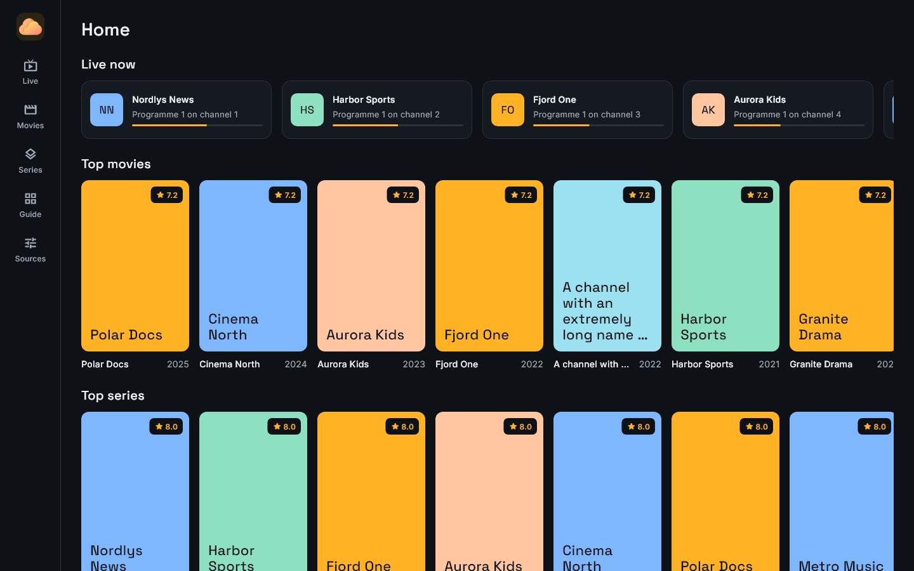
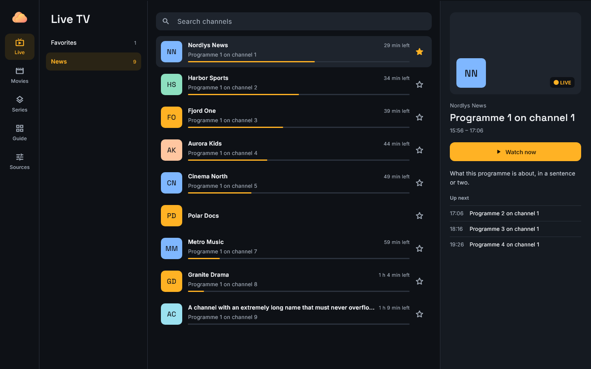
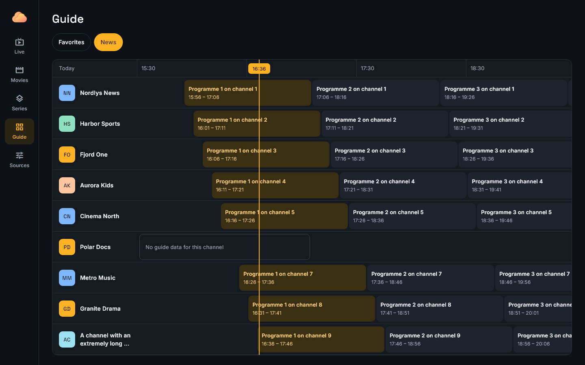
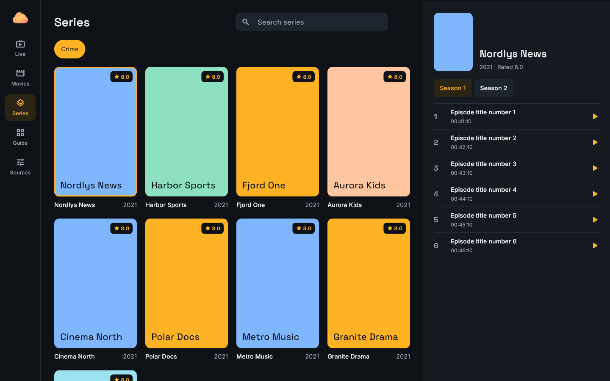
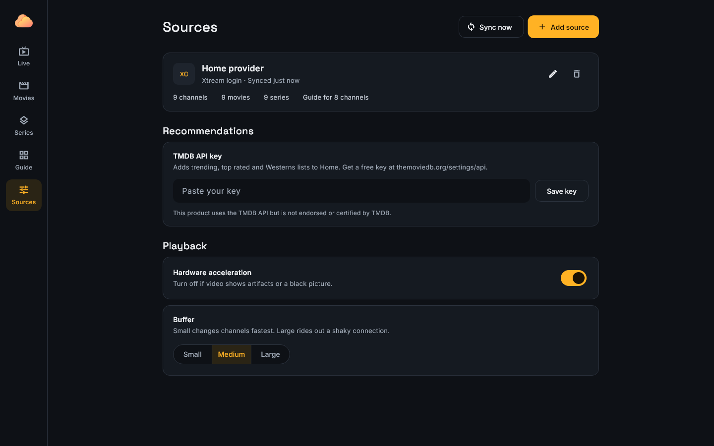

All your TV in one calm, fast place.
Cloud IPTV is a player for the live TV, movies and series you already have, from your own M3U playlists and Xtream Codes accounts.

What it does
Opens instantly
Your library loads from a local cache, and updates happen quietly in the background.
Pick up where you left off
Keep watching resumes movies and episodes, and recently watched brings back your channels.
Lists worth browsing
Trending and top rated lists from TMDB, showing only titles you can actually play.
A proper TV guide
See what's on now and next across your channels, with a live timeline.
Stays on air
Reconnects by itself and switches to backup streams when a channel drops.
Tuned to your connection
Hardware decoding, plus a buffer setting that favours fast channel changes or a steadier picture.
A look around




Screenshots use made-up sample data.
Good to know
Bring your own content
Cloud IPTV is only a player. It doesn't include, host or sell any channels or video. You add sources you have the right to use.
Your data stays with you
Logins, favourites and watch history are stored on your device. There are no accounts, ads or tracking.
Platforms
Windows is the main platform today. Linux, Android and iOS versions are in development.